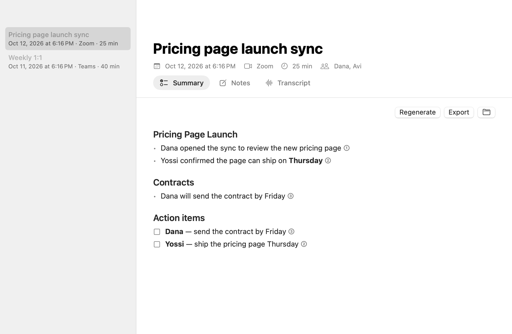
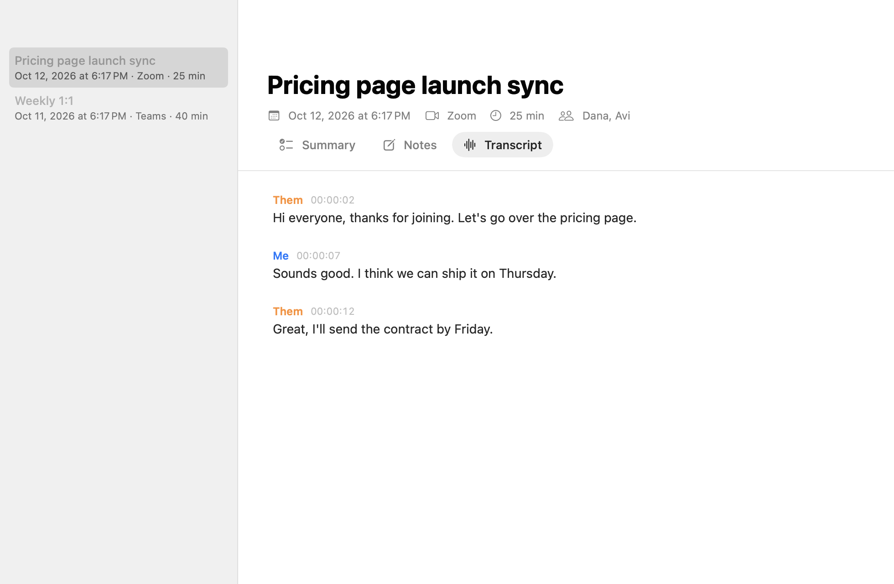

Aftercall notices when a call starts, transcribes both sides privately on your Mac, and turns the conversation into clear notes — a summary with sources, your own notes, and the full transcript.
Download for Mac
Join your call as usual. Aftercall takes it from there — and stays out of the way.
Zoom, Teams, Google Meet, Slack, WhatsApp, FaceTime — when an app starts using your mic, a small prompt offers to take notes.
Speech is transcribed on your Mac's Neural Engine. Your audio never leaves your computer.
Calls can switch languages freely — each sentence goes to the right model. English plus 24 European languages too.
Topic-by-topic summary with names, decisions and action items. Every point links to the moment it was said.
When the call ends, Aftercall stops on its own and writes your notes. You'll find them waiting.
Plain Markdown and JSON files in a folder you choose. Optional copies to Google Drive, Notion or your own webhook.
While you talk, a tiny bar sits in the corner of your screen. Hover to see the live transcript; click to open the meeting. Jot your own notes in the Notes tab — the summary uses them.

This early version is signed but not yet notarized by Apple, so macOS asks you to confirm the first time.
Free for Mac. Updates install automatically.
Download Aftercall